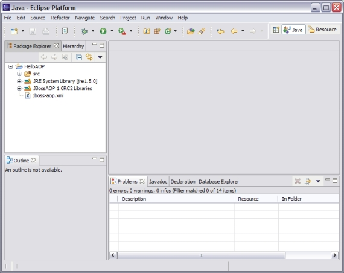

Creating a new AOP Project
For the time being, creating an AOP project consists of first creating a Java Project, then afterwards converting that project into an AOP project.
In the future there will be a New AOP Project Wizard, but for now just stick with these directions:
- From eclipse's main menu, you can click on the File Menu, and under it, New > Project...
- Double click on "Java Project"
- In the Project Name text box, let's enter "HelloAOP" (without quotes -- make sure not to enter a space).
- "Create Project in Workspace" should be fine for the project location. If you want to use an external location, make sure there are no spaces in the path.
- Under "Project layout" make sure to click "Create seperate source and output folders", then click the "Next" button.
- The project properties window should now open. The only thing you should need to do at this point is to add all the required AOP libraries to your project's
libraries. The easiest way to get the AOP libraries needed is to just use the plugin's jar files, but this can be unstable when upgrading the version of the plugin.
The best solution is to grab the latest release of jboss aop (currently 1.0RC1: Here's a link),
and unzip the file into a place that you can remember.
- Click on the "Libraries" tab of the project properties window.
- Click the "Add External JARs.." Button.
- Browse to the directory where you extracted the jboss-aop-1.0RC1.zip file, and select all the JAR files in the directory except jboss-aop-jdk15.jar.
- Click The "Finish" Button.
- NOTE: If you get a dialog box asking if you want to switch to the Java Perspective, click Yes.
- At this point, your eclipse workbench should look something like this:

- All we need to do now is right click on the Project, and Click on "Convert to AOP Project..." to make this Project an AOP Project.